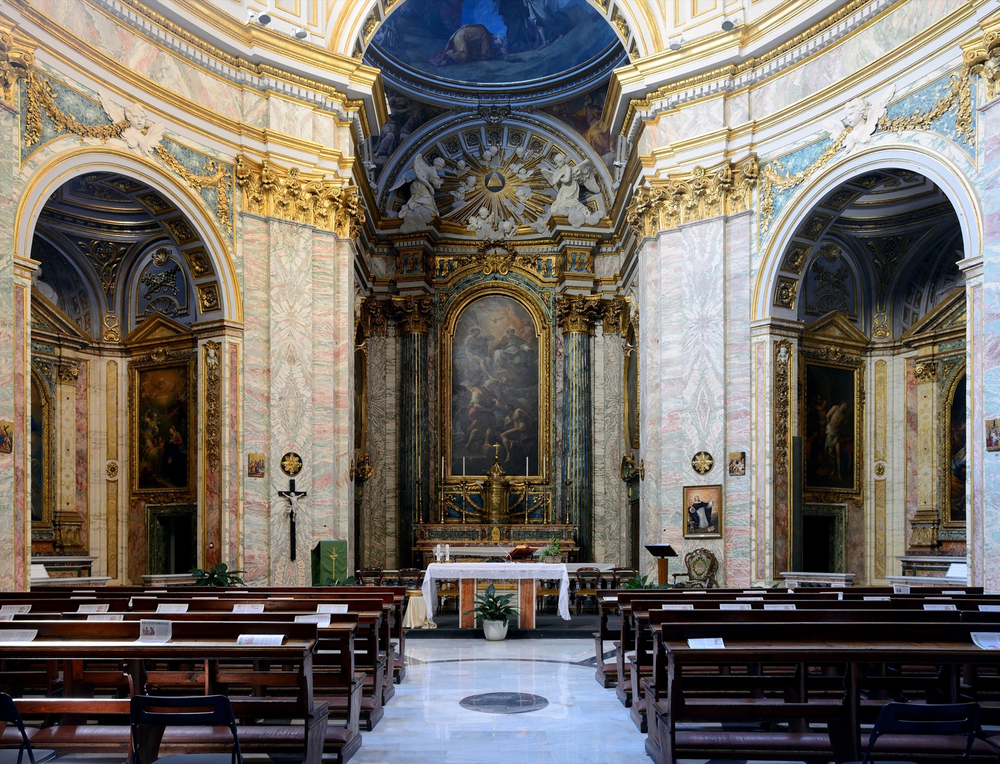

Order of the Most Holy Trinity and of the Captives
The Trinitarian Order
Glorifying the Most Holy Trinity & the redemption of captives since 1198
Founded by Saint John de Matha and Saint Felix de Valois, the Trinitarians live a 900-year charism of prayer and the ransom of captives — consecrated to the Father, Son, and Holy Spirit.

Explore
Background
History & Charism
The founding, the two-color cross, and the mission of redemption.
Liturgy
Feast Days
The Order’s proper calendar, from the Trinitarian Way handbook.
Prayer
The Trisagion
The short and solemn forms members pray each day.
Vocation
How to Join
Religious life or the lay Third Order — begin the Trinitarian Way.